Analyse statt Zufall · seit 2004
Lauf- und Bergschuhe aus dem Inntal.
Videoanalyse, Fußanalyse und — wenn das Wetter mitspielt — ein Geländetest. Direkt bei uns in Oberaudorf. Wir nehmen uns Zeit für deinen Schuh.
- ★ 5,0 Google-Bewertungen
- 20 Jahre persönliche Beratung
- Oberaudorf Laurentiusstraße 24
Unsere Methode
Vier Schritte zum richtigen Schuh
Kein Zufall, kein Ratespiel. Ein klarer Ablauf, den wir seit über 20 Jahren verfeinern.
-
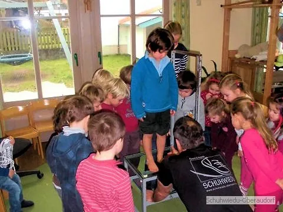
Fußanalyse
Mit Spiegeltisch und geschultem Blick erfassen wir jede Eigenheit deines Fußes.
-
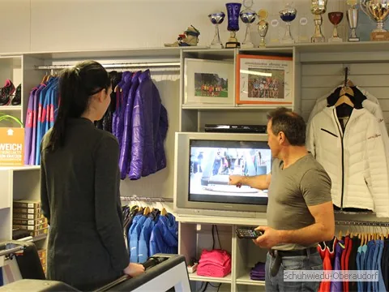
Videolaufband-Analyse
Mit hochauflösender Kamera und Zeitlupe sehen wir, warum deine Schuhe nicht zu deinem Laufstil passen — und was wirklich hilft. Kein Marketing. Unser Handwerk seit 20 Jahren.
-
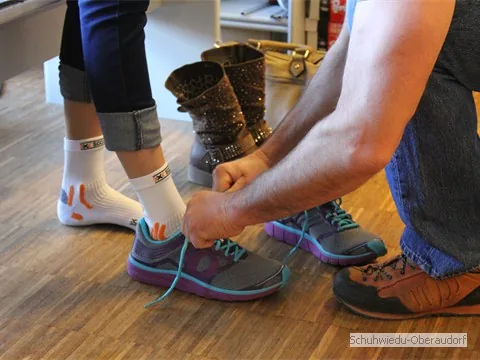
Geländetest
Kein Schuh verlässt uns ungetestet — du probierst ihn direkt vor der Tür.
-
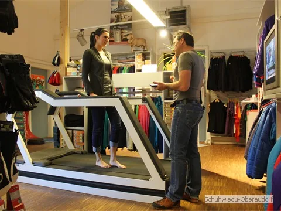
Persönliche Beratung
Eine gute Beratung braucht Zeit. Die nehmen wir uns — ohne Verkaufsdruck.
Beratung zum Ansehen
Sortiment
Was du bei uns findest.
Vom Laufschuh über den Trail- bis zum Bergschuh — dazu Bekleidung und Zubehör. Eine Auswahl von dem, was du bei uns findest.
Von der Straße über Trail und Allrounder bis zum steigeisenfesten Bergstiefel — für jeden Schritt der passende Schuh.
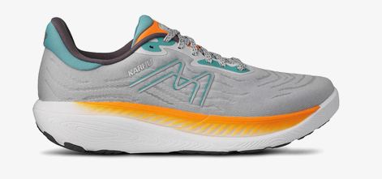
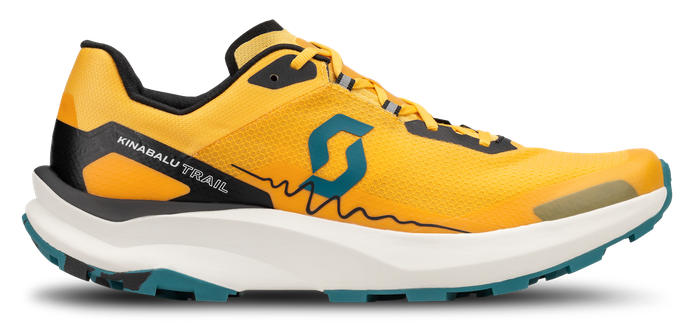
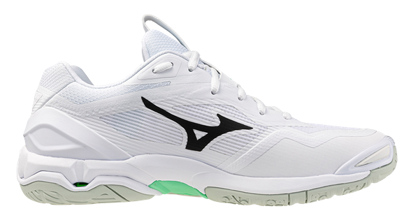
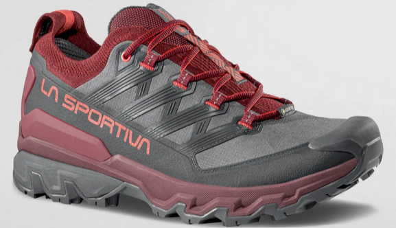
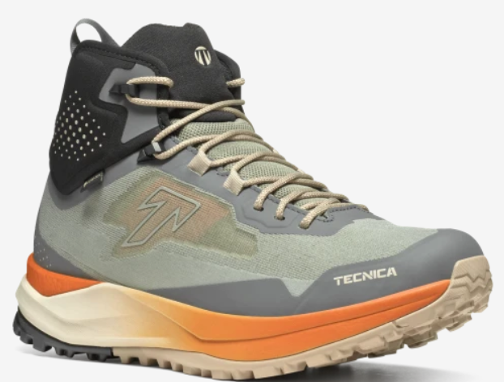
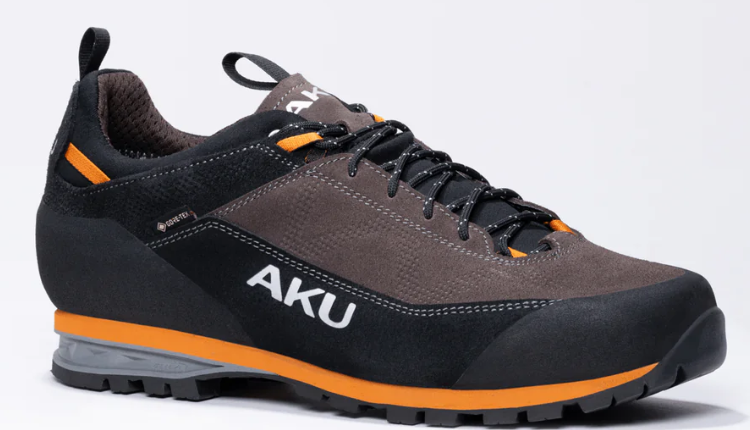
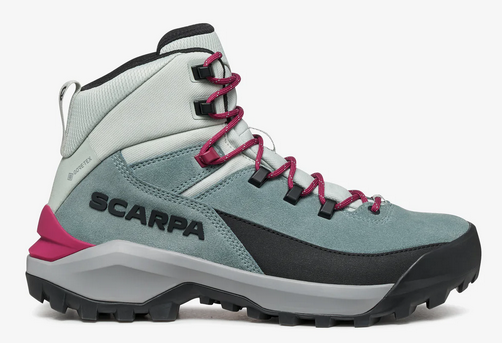
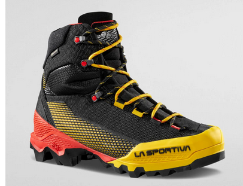
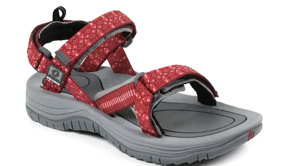
Bekleidung
Wir führen ein ausgesuchtes Sortiment an Bekleidung aus technischen Materialien, das die Anforderungen des aktiven Sportlers beim Laufen, Nordic Walken, Langlaufen und Wandern erfüllt. Ausgehend von unseren eigenen Erfahrungen mit den Produkten beim Sport und beim Testen im Labor empfehlen wir jedem Kunden die Kleidungsstücke, die seinen individuellen Voraussetzungen und Ansprüchen entsprechen.
Merino-Wolle
Wir als Ausdauersportler tragen seit Jahren Bekleidung aus Merinowolle, weil sie einen besonderen Tragekomfort bietet: Die feinen, natürlichen Fasern sind atmungsaktiv, pflegeleicht, geruchsabweisend und kratzen nicht. Sie halten bei Kälte warm und kühlen bei Hitze und sorgen so für ein angenehmes Körperklima. Das Gefühl ein Naturprodukt auf der Haut zu spüren überzeugt uns schon lange, nicht zuletzt, weil Merinowolle auch nach mehrmaligem Tragen nicht riecht und nicht so oft gewaschen werden muss wie Kunstfasern.
Professionelle Beratung im Bereich Sport-BH bis Cup H — diskret und kompetent in der Textil-Sprechstunde mit Susi.
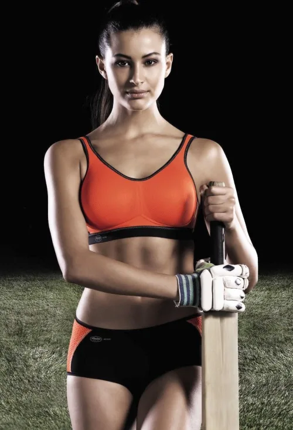
Sport-BHs führen wir ausschließlich von Anita.
Für uns Frauen: Warum ein gut sitzender Sport-BH wichtig ist
Sich sportlich betätigen mit einem gut sitzenden Sport-BH – ein wunderbares Gefühl!
Um sich beim Sport wohl zu fühlen sind grundsätzlich einige Tatsachen sehr wichtig:
Bei vielen Bewegungsarten braucht man einen guten Laufschuh der zum Fuß passt, eine funktionierende Sportbekleidung und vor allem einen gut sitzenden Sport-BH der den ganzen Brustapparat (Brust, Schultern und Rücken) schützt und stützt.
Die Brust besteht hauptsächlich aus Drüsen- und Fettgewebe, das durch Sehnen und Bänder gehalten wird. Der Busen hat keine eigene Muskulatur und hängt sozusagen an der Brustwand an.
Ein guter Sport-BH sollte aus einem festen, jedoch luftdurchlässigen Kunstfaser-Material sein. Sehr wichtig sind breite, verstellbare Träger, nahtlose Cups, ein atmungsaktiver Netzrücken, eine besondere seitliche Stützwirkung und ein elastisches Unterbrustband.
Beim Sport bewegt sich schon ein kleiner Busen einige Zentimeter auf und ab und das bei jedem Schritt. Die Brust mit einem C/D-Cup bewegt sich z. B. beim Joggen ca. 84 Meter pro km Laufstrecke – das bedeutet Schwerstarbeit für den gesamten Brustapparat.
Der Zug, der beim Sport ohne BH oder mit einem ungeeigneten BH entsteht, belastet nicht nur das Brustgewebe, sondern zugleich auch die Wirbelsäule.
Bei großer Oberweite kann es zudem auf Dauer durch die Auf- und Abbewegung zu Verspannungen im Rücken und Schulterbereich kommen.
Wer regelmäßig Sport treibt, sollte seine Brust vor Haut- und Gewebeschäden schützen.
Ein gut sitzender Sport-BH kann die Eigenbewegung um ca. 75 % bis 78 % verringern! Eine Brust, der ein guter Sport-BH angepasst ist, hält die sportlichen Aktivitäten sehr viel besser aus und die Spannkraft des Busens ist weiterhin gegeben, so dass sich keine sogenannte Hängebrust entwickeln kann.
Lassen Sie sich von mir diskret beraten, ich freue mich darauf!
Ich bin für Sie da:
Freitag 14.30 – 18.00 Uhr und Samstag 09.00 – 13.00 Uhr
Ihre Susi
Alles, was du fürs Training und die Tour brauchst — ausgewählt, nicht aneinandergereiht.
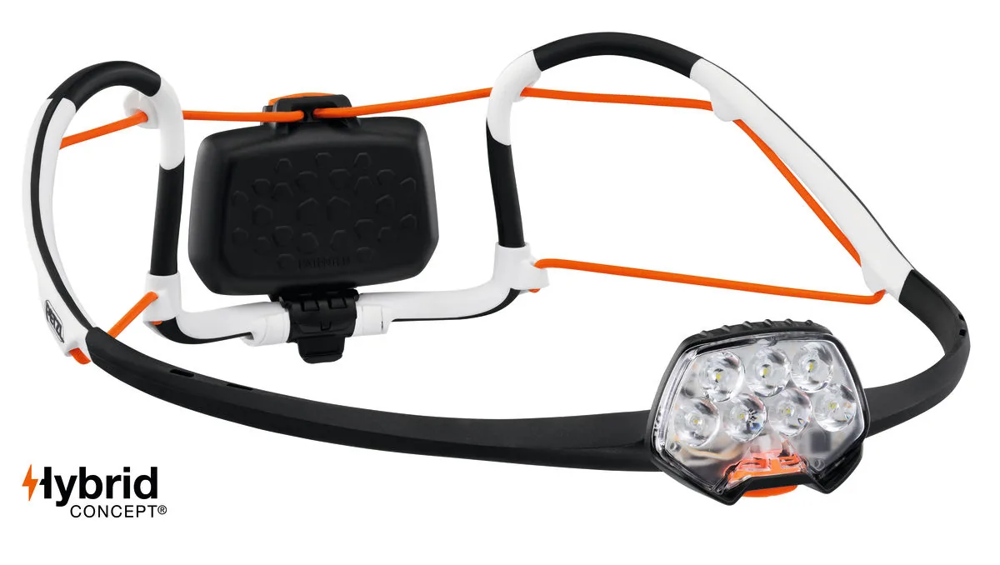
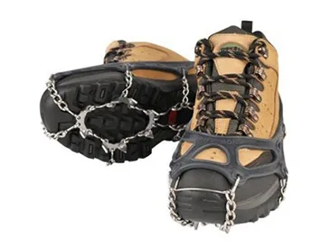
Auch dabei
- Laufsocken
- Trekkingstöcke
- Grödel & Spikes
- Stirnlampen
Noch ein Tipp von uns: ein handgemachter Gutschein von Schuhwiedu — die persönliche Geschenkidee für alle, die gern draußen unterwegs sind.
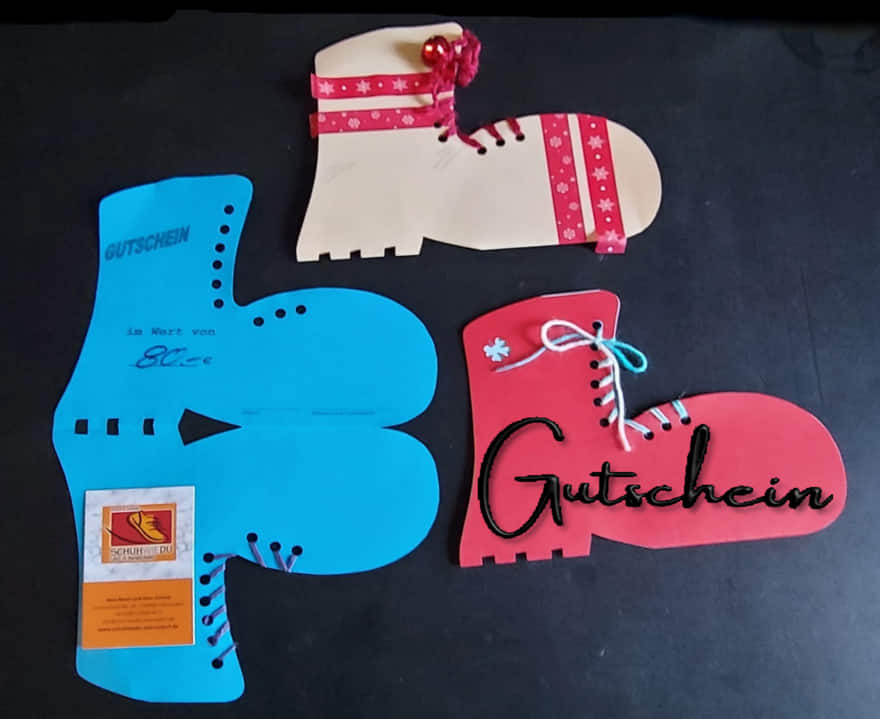
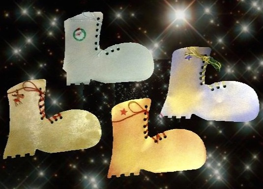
Unsere handgemachten Gutscheine können auch versendet werden — frag einfach im Laden oder ruf uns an.
Über uns
Drei Menschen, ein Handwerk.
Hans Resch und Hans Schmid haben SCHUHWIEDU am 1. Juli 2004 gegründet — mit einem klaren Ziel: Beratung, die sich Zeit nimmt. Aus eigener Erfahrung als Bergsportler.
Manche Kunden fahren über 100 Kilometer zu uns. Nicht wegen der Auswahl, sondern wegen der Zeit, die wir uns nehmen.
-
 Hans Resch Gründer · Bergsteiger, Bergläufer, Skitouren-Gänger — Beratung aus eigener Erfahrung.
Hans Resch Gründer · Bergsteiger, Bergläufer, Skitouren-Gänger — Beratung aus eigener Erfahrung. -
 Hans Schmid Gründer · Laufanalyse und Trainingsberatung, Jahrzehnte aktiv in den Alpen.
Hans Schmid Gründer · Laufanalyse und Trainingsberatung, Jahrzehnte aktiv in den Alpen. -
 Susi Funktionsbekleidung & Sport-BH — Beratung mit der nötigen Diskretion.
Susi Funktionsbekleidung & Sport-BH — Beratung mit der nötigen Diskretion.

Prominente Gäste
Profis wissen, wo echte Sportler einkaufen.
Biathletin Franziska Preuß und Biathlet Simon Schempp haben dem Schuhwiedu schon einen Besuch abgestattet. Solche Begegnungen sind für uns Anerkennung — und Bestätigung dafür, dass ehrliche Beratung auch im Profisport gefragt ist.
Bewertungen
Was unsere Kunden sagen.
War dein Besuch bei uns schön? Dann freuen wir uns riesig, wenn du dir kurz die Zeit nimmst und eine positive Bewertung bei Google hinterlässt. Für ein kleines, inhabergeführtes Geschäft wie uns ist das Gold wert — und es hilft anderen, uns zu finden. Vielen Dank dafür!
Häufige Fragen
Was du wissen willst, bevor du kommst.
Ein paar Antworten auf das, was uns am häufigsten gefragt wird. Alles andere gern persönlich — ruf uns an.
Muss ich einen Termin vereinbaren?
Nein, ein Termin ist nicht nötig — komm einfach während der Öffnungszeiten vorbei, es ist immer jemand für dich da. Nur bei speziellen Fragen oder größeren Gruppen ruf uns vorher kurz an, dann nehmen wir uns gezielt Zeit.
Wie viel kostet die Videoberatung?
Die Videoberatung ist in jeder Schuhberatung bei uns enthalten — ohne Aufpreis.
Wie lange dauert eine Beratung?
Plan für eine Beratung immer zwischen 30 und 60 Minuten ein. Eine gründliche Laufanalyse mit Videoberatung und mehreren Schuhtests braucht Zeit — und die nehmen wir uns.
Gibt es Parkplätze?
Ja — die Parkplätze sind direkt vor dem Laden. Du kannst bequem bis vor die Tür fahren.
Ist der Laden barrierefrei?
Ruf uns gern kurz an, bevor du kommst — dann sagen wir dir genau, was dich erwartet und wie wir dir den Zugang am besten ermöglichen.
Kann ich auch als Anfänger zu euch kommen?
Natürlich. Gerade am Anfang lohnt sich eine gute Beratung — der richtige Schuh entscheidet oft, ob du beim Sport bleibst oder frustriert aufhörst. Wir sprechen Klartext, kein Fachchinesisch.
So findest du uns
Eine kurze Wegbeschreibung zum Laden — und ein erster Blick hinein.
Besuch uns
Laurentiusstraße 24
83080 Oberaudorf
Öffnungszeiten
- Mo, Di, Do, Fr
- 09:00 – 12:30 · 14:30 – 18:00
- Mittwoch
- 09:00 – 12:30
- Samstag
- 09:00 – 13:00
- Sonntag
- Geschlossen